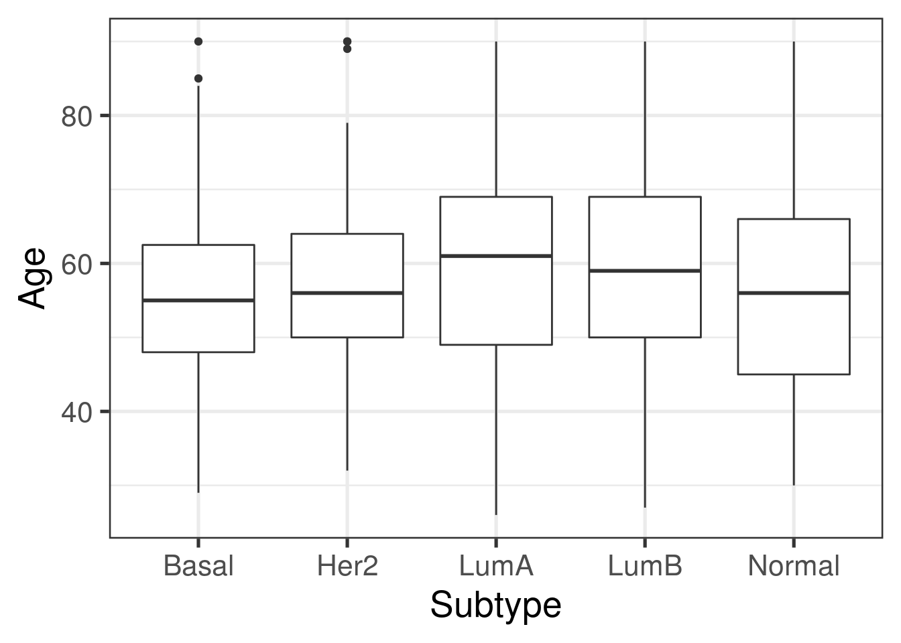
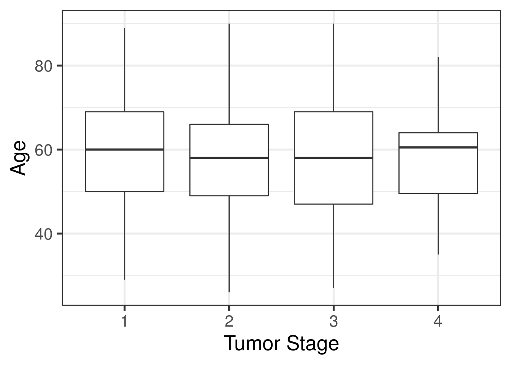

2 Building a statistical model
2.1 Exploring attributes
We previously saw that our main sources of information are from recount quality control and from tcga. For the model, we will look at information from tcga.
head(colnames(colData(rse_BRCA))[grepl('^tcga', colnames(colData(rse_BRCA)))], 10)## [1] "tcga.tcga_barcode" "tcga.gdc_file_id" "tcga.gdc_cases.project.name"
## [4] "tcga.gdc_cases.project.released" "tcga.gdc_cases.project.state" "tcga.gdc_cases.project.primary_site"
## [7] "tcga.gdc_cases.project.project_id" "tcga.cgc_sample_sample_type" "tcga.gdc_cases.case_id"
## [10] "tcga.gdc_updated_datetime"Looking through the full list, some possible columns to select for our analysis are the following:
- “tcga.gdc_cases.diagnoses.classification_of_tumor”
- “tcga.gdc_cases.diagnoses.primary_diagnosis”
- “tcga.gdc_cases.diagnoses.tumor_stage”
- “tcga.gdc_cases.diagnoses.age_at_diagnosis”
- “tcga.cgc_case_age_at_diagnosis”
- “tcga.xml_histological_type”
- “tcga.xml_distant_metastasis_present_ind2”
We can check each one to see what kind of information they contain, and select the most useful ones.
# Essentially empty, either not reported or NA
table(rse_BRCA$tcga.gdc_cases.diagnoses.classification_of_tumor)##
## not reported
## 1246# Not very useful, as most samples have the same value
# c50.9 = Malignant neoplasm: Breast, unspecified
table(rse_BRCA$tcga.gdc_cases.diagnoses.primary_diagnosis)##
## c50.2 c50.3 c50.4 c50.5 c50.8 c50.9 c50.919
## 2 6 5 1 3 1228 1# Useful information, it appears most samples have it and we have different levels
table(rse_BRCA$tcga.gdc_cases.diagnoses.tumor_stage)##
## not reported stage i stage ia stage ib stage ii stage iia stage iib stage iii stage iiia
## 12 106 96 6 6 408 299 2 174
## stage iiib stage iiic stage iv stage x
## 31 71 22 13# Two very similar columns
# It appears the first is in days, the second in years, we will use the second one
head(rse_BRCA$tcga.gdc_cases.diagnoses.age_at_diagnosis)## [1] 16689 24544 17420 25186 27934 25263head(rse_BRCA$tcga.cgc_case_age_at_diagnosis)## [1] 45 67 47 68 76 69# Different categories, it appears all samples have data
table(rse_BRCA$tcga.xml_histological_type)##
## Infiltrating Carcinoma NOS Infiltrating Ductal Carcinoma Infiltrating Lobular Carcinoma
## 1 896 219
## Medullary Carcinoma Metaplastic Carcinoma Mixed Histology (please specify)
## 8 13 39
## Mucinous Carcinoma Other, specify
## 18 51# Useful information, but not all samples have data
table(rse_BRCA$tcga.xml_distant_metastasis_present_ind2)##
## NO YES
## 466 17From this, we select “tcga.gdc_cases.diagnoses.tumor_stage” and “tcga.cgc_case_age_at_diagnosis”. For this particular analysis, instead of using the histological type, we are interested in the PAM50 subtype, which we will add to the data later. For the tumor stage, we will reduce the number of levels by ignoring the sub-stage, as well as stage X (undetermined stage), keeping only stage I, stage II, stage III and stage IV.
# Remove a, b, c termination, store in new col
rse_BRCA$tumor_stage <- gsub('[abc]$', '', rse_BRCA$tcga.gdc_cases.diagnoses.tumor_stage)
# Replace stage x and not reported with NA
rse_BRCA$tumor_stage <- gsub('stage x|not reported', NA, rse_BRCA$tumor_stage)
# Store data as numbers, as stage I is least advanced, stage IV most advanced
rse_BRCA$tumor_stage <- gsub('stage iv', 4, rse_BRCA$tumor_stage)
rse_BRCA$tumor_stage <- gsub('stage iii', 3, rse_BRCA$tumor_stage)
rse_BRCA$tumor_stage <- gsub('stage ii', 2, rse_BRCA$tumor_stage)
rse_BRCA$tumor_stage <- gsub('stage i', 1, rse_BRCA$tumor_stage)
table(rse_BRCA$tumor_stage)##
## 1 2 3 4
## 208 713 278 22# Store age in new column for easier selection
rse_BRCA$age <- rse_BRCA$tcga.cgc_case_age_at_diagnosisTo obtain the PAM50 subtypes, we will need the package TCGAbiolinks. The function TCGAquery_subtype allows us to retrieve molecular subtype data. The documentation can be found here.
library("TCGAbiolinks")
# We will store patient and subtype
subtypes <- TCGAquery_subtype(tumor = "brca")[, c("patient", "BRCA_Subtype_PAM50")]## brca subtype information from:doi.org/10.1016/j.ccell.2018.03.014subtypes <- as.data.frame(subtypes)
nrow(subtypes)## [1] 1087We have information for 1087 of the 1256 samples. Now, we need to match this information to our table.
head(subtypes$patient)## [1] "TCGA-3C-AAAU" "TCGA-3C-AALI" "TCGA-3C-AALJ" "TCGA-3C-AALK" "TCGA-4H-AAAK" "TCGA-5L-AAT0"head(rse_BRCA$tcga.tcga_barcode)## [1] "TCGA-E9-A249-01A-11R-A169-07" "TCGA-BH-A1EX-01A-11R-A13Q-07" "TCGA-AO-A12A-01A-21R-A115-07"
## [4] "TCGA-AC-A3OD-01B-06R-A22O-07" "TCGA-AC-A23G-01A-11R-A213-07" "TCGA-A8-A07I-01A-11R-A00Z-07"We will take the first 12 characters of the tcga_barcode and use them to match the subtype. TCGA barcodes contain data about each sample, as explained here.

The digits following the initial 12 detail whether a sample comes from a tumor or from normal tissue. There are no duplicates for patient in the subtypes table we obtained, so this will only matter if there are both normal and tumor samples for the same patient in our rse_BRCA object, in which case, both will get marked as the type of tumor.
barcode_trimmed <- sapply(rse_BRCA$tcga.tcga_barcode, substr, 1,12, USE.NAMES = FALSE)
# Add as new column
rse_BRCA$subtype <- subtypes$BRCA_Subtype_PAM50[match(barcode_trimmed, subtypes$patient)]
# Fix normal samples mismatched
# Normal samples have the 14th digit of tcga_barcode = 1
rse_BRCA$subtype[substr(rse_BRCA$tcga.tcga_barcode, 14, 14) == 1] <- "Normal"
# Tumor samples have 14th digit = 0, if one is "Normal", something went wrong, we can ignore those samples
rse_BRCA$subtype[(substr(rse_BRCA$tcga.tcga_barcode, 14, 14) == 0)&(rse_BRCA$subtype == "Normal")] <- NANow, we will make a statistical model based on these attributes. Before that, we process our desired data one more time, ensuring data types are correct and no NA values remain.
# Change type of columns of interest, numeric or factor
rse_BRCA$subtype <- factor(rse_BRCA$subtype)
rse_BRCA$age <- as.numeric(rse_BRCA$age)
rse_BRCA$tumor_stage <- as.numeric(rse_BRCA$tumor_stage)
# Samples
ncol(rse_BRCA)## [1] 1256# Only keep samples with no NA values in desired cols
rse_BRCA <- rse_BRCA[,rowSums(is.na(colData(rse_BRCA)[c('subtype', 'age', 'tumor_stage')])) == 0]
ncol(rse_BRCA)## [1] 1159We are left with 1159 samples. We can obtain a summary of the data:
summary(as.data.frame(colData(rse_BRCA)[c('subtype', 'age', 'tumor_stage')]))## subtype age tumor_stage
## Basal :203 Min. :26.00 Min. :1.00
## Her2 : 79 1st Qu.:48.00 1st Qu.:2.00
## LumA :558 Median :58.00 Median :2.00
## LumB :208 Mean :58.43 Mean :2.09
## Normal:111 3rd Qu.:67.50 3rd Qu.:2.00
## Max. :90.00 Max. :4.002.2 Normalizing data
We will use the package edgeR to normalize the data, correcting for composition bias.
library("edgeR")
dge <- DGEList(
counts = assay(rse_BRCA, "counts"),
genes = rowData(rse_BRCA)
)
dge <- calcNormFactors(dge)2.3 Exploring relationships between variables
Considering our three variables, we can explore the relationships between them before proceeding with the model.
# Plotting
library("ggplot2")
# Age vs subtype
ggplot(as.data.frame(colData(rse_BRCA)), aes(y = age, x = subtype)) +
geom_boxplot() +
theme_bw(base_size = 20) +
ylab("Age") +
xlab("Subtype")
There are only slight differences between the age at diagnosis and the subtype.
# Stage vs subtype
table(colData(rse_BRCA)[c('subtype', 'tumor_stage')])## tumor_stage
## subtype 1 2 3 4
## Basal 29 144 27 3
## Her2 7 49 20 3
## LumA 117 305 128 8
## LumB 25 118 61 4
## Normal 19 65 25 2Stage II is the most common. For these plots, we have to keep in mind that normal samples are paired with cancer samples, the stage and age of diagnosis corresponds to the tumor associated.
# Stage vs age
ggplot(as.data.frame(colData(rse_BRCA)), aes(y = age, x = factor(tumor_stage))) +
geom_boxplot() +
theme_bw(base_size = 20) +
ylab("Age") +
xlab("Tumor Stage")
From these plots, it appears that age is not correlated with a particular subtype or stage: the distribution of age is similar across all four stages and all subtypes.
We will proceed with the following statistical model:
# Change reference so Normal is the intercept in the model
rse_BRCA$subtype <- relevel(rse_BRCA$subtype, "Normal")
mod <- model.matrix(~ age + subtype + tumor_stage,
data = colData(rse_BRCA)
)
colnames(mod)## [1] "(Intercept)" "age" "subtypeBasal" "subtypeHer2" "subtypeLumA" "subtypeLumB" "tumor_stage"